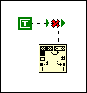

This error occurs when you attempt to use the multiline? input of the Search and Replace String function when the function is not in Regular Expression mode.
To correct this error, right-click the function on the block diagram and select Regular Expression from the shortcut menu to use regular expressions.